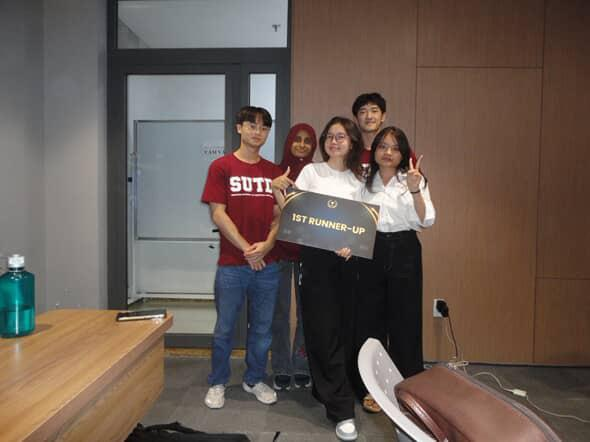

TagEdu: Bridging the Digital Divide
AI Education Strategy @ Ho Chi Minh City
/ Project Overview
About the Partner
TagEdu is an EdTech initiative focused on bridging the digital divide for K-12 students in provincial Vietnam by providing accessible coding and AI education.
Collaborated with a cross-functional team to develop a scalable, culturally localized AI education strategy. This challenge required us to move beyond standard EdTech assumptions to account for the unique socio-technical landscape of rural Vietnam.
Barrier 01
Infrastructure Gaps
Limited internet connectivity and device availability for provincial K-12 students.
Barrier 02
Teacher Readiness
Significant variations in technical literacy and training levels among regional educators.
Interactive Prototype
Explore the high-fidelity UI/UX design developed to support students and teachers in provincial Vietnam.
Open Figma Prototype ↗Key Contributions
UI/UX Lead
Utilized Figma to design the high-fidelity interactive prototype, focusing on an intuitive user journey for both students and teachers.
Design Thinking
Applied "How Might We" frameworks to identify and solve for infrastructure gaps and organizational transformation.
Market Analysis
Conducted research on the Southeast Asian EdTech landscape to ensure the proposed business model (franchising/licensing) was sustainable and scalable.
Milestone Achievement

"A milestone moment with the 'TagEdu' development team after securing the 1st Runner-Up spot. This experience involved a week of intensive cross-cultural collaboration and rapid prototyping in Ho Chi Minh City".